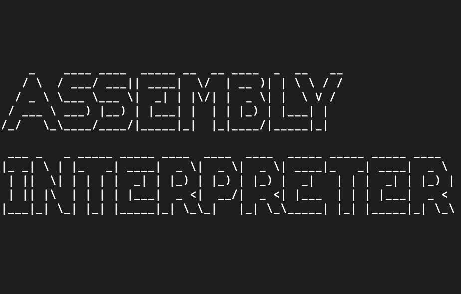
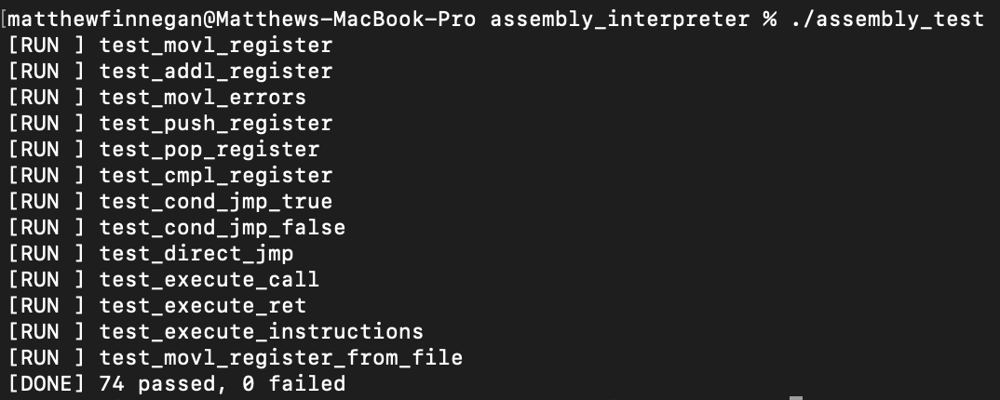
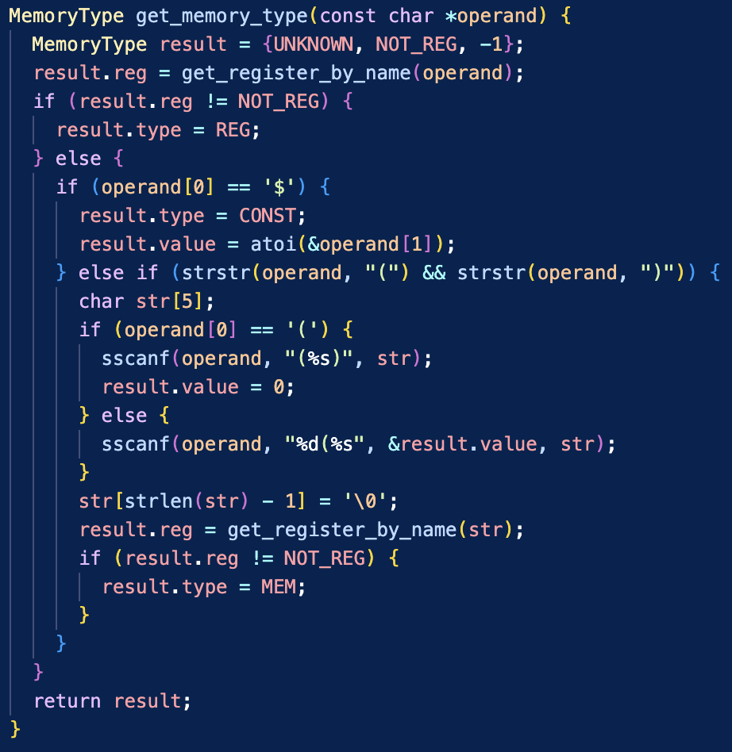
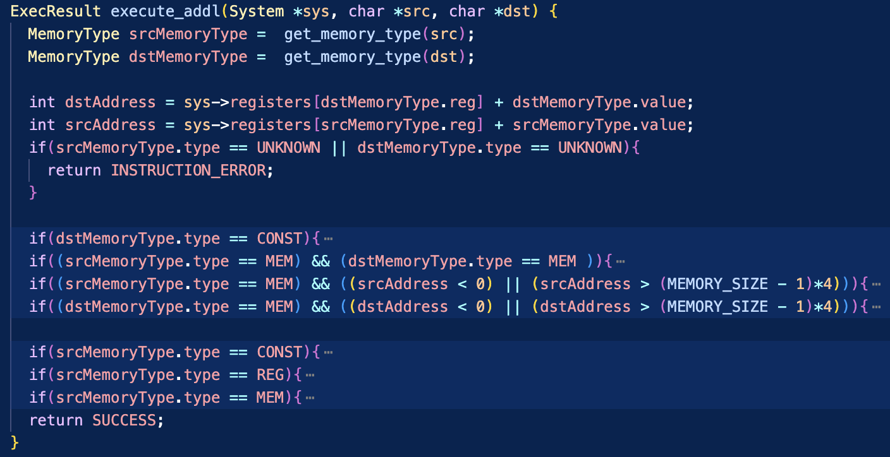

Assembly Interpreter

Project Information
- Category: Systems
- Project date: Fall 2025
Project Overview
A x86-like assembly interpreter in C. It loads a text file of simplified assembly instructions into an in-memory “instruction segment,” maintains a register file + data memory, then fetches/decodes/executes instructions until END or an error.
Demo
This program calculates 3 + 4 in registers and uses PUSH/POP on the stack. The register dump shows EAX = 7 and ECX = 7, demonstrating arithmetic, stack use, and branching.
Correctness
A suite of 74 unit tests covering arithmetic, stack, control flow, and error handling all passed successfully, confirming the interpreter’s correctness.


Operand Parser
This function decodes assembly operands into a structured form. It distinguishes between registers (e.g., %EAX), constants (e.g., $5), and memory references (e.g., -4(%EBP)), returning a MemoryType with the operand’s type, register, and value. This parsing step is critical for the interpreter’s fetch–decode–execute cycle.
Execute ADDL
Implements the ADDL instruction by decoding operands, checking for invalid cases (constants, bad memory addresses, two memory operands), and updating the system state if valid.
